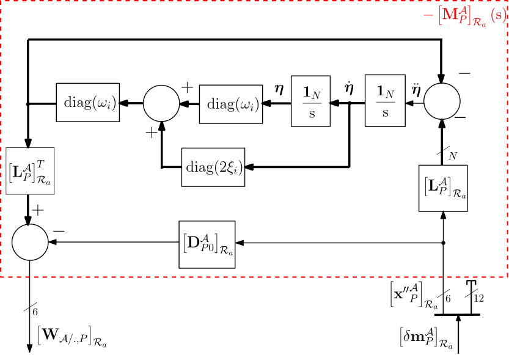
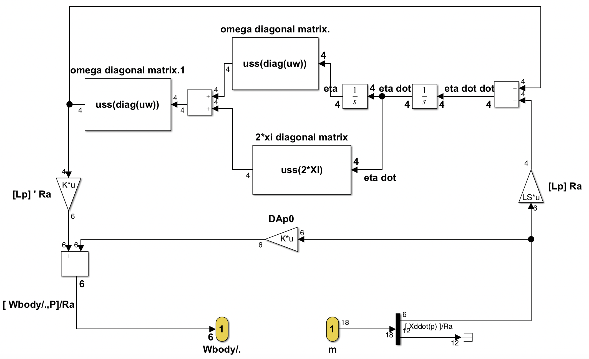

1 port Nastran body
One-port (6x18) model of a NASTRAN flexible body from .f06 file
This block is a NASTRAN/MATLAB interface to compute the $(6 \times 18)$ linear dynamic model of a flexible body $\mathcal{A}$ from the motion vector to the wrench applied by this body to the parent body.
This interface reads the values from the NASTRAN/PATRAN analysis output file (file with extension .f06) to build the model. The reader is advised to read first the help of 1-port flexible body .
The obtained model is expressed:
- in its reference frame $\mathcal{R}_a$,
- at the point $P$ (the connection point with another body and the reference point for the NASTRAN/PATRAN analysis).
See also: General notations, 1-port flexible body, N-ports NASTRAN flexible body, Multi-Port_rigid_body
Contents
Description
The $6\times 18$ model is depicted in the following Figure::

It depends on :
- the frequencies $\omega_i$ and damping ratios $\xi_i$ ($i=1,\cdots,N$) of the $N$ flexible modes,
- the $N \times 6$ matrix of modal participation factor $\mathbf{L}^{\mathcal A}_P$,
- the residual mass $\mathbf D^{\mathcal{A}}_{P0}$ of the body $\mathcal{A}$ rigidly cantilevered at point $P$.
In the Figure above, $-\mathbf{M}^{\mathcal{A}}_P(\mathrm{s})$ is the $6\times 6$ transfer from the $6$ components of the acceleration dual vector $\boldsymbol{\mathbf x''}^\mathcal{A}_P$ to the $6$ components of the interaction wrench $\left[\mathbf{W}_{\mathcal{A/.},P} \right]_{\mathcal{R}_a}$. The last $12$ components of the motion vector $\delta\mathbf{m}^{\mathcal{A}}_P$ are not used in this block.
Ports
Input:
Output:
Parameters
- Name of the .f06 file (without extension): string,
- Number of modes to be considered: integer $N$. This integer must equal or lower than the number of flexible modes in the .f06 file,
- Common damping ratio $\xi$: real (can be declared as an uncertain parameters with ureal),
- Uncertainties (%) on the flexible mode frequencies $\omega_i$: a common positive real value or a vector with $N$ components (in increasing frequency order).
Simulink diagram under the mask

Remarks:
- for each frequency $\omega_i,\forall\;i=1,\cdots, N$, the associated uncertain parameter is named: 'w_name_i' where 'name' is the current block name (without spaces).
- for the user who wants to take into account uncertainties on the components of the modal participation factor matrix $\mathbf{L}_P$, 2 options are proposed:
- to extract the data thanks to the function getDataFromNASTRAN1Port.m (see: help getDataFromNASTRAN1Port) and then to use the 1-port flexible body block.
- to use the block a N-ports NASTRAN flexible body (with a dummy child port).